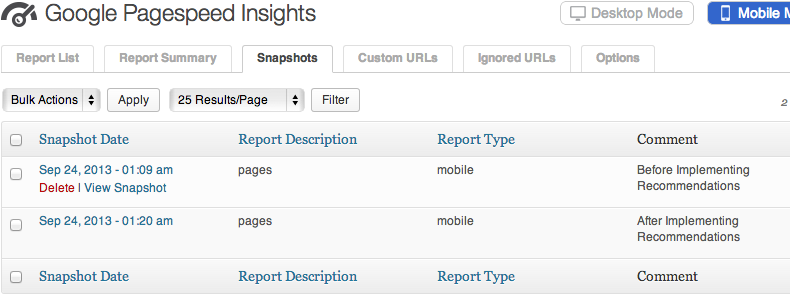

Google Pagespeed Insights for Wordpress v1.03 Documentation by Matt Keys
Google Pagespeed Insights for Wordpress

Created: 09/28/2013
Updated: 02/03/2014
By: Matt Keys
mattkeys.me
Thank you for downloading Google Pagespeed Insights for Wordpress. If you have any questions that are beyond the scope of this help file, please visit mattkeys.me. Thanks so much!
Table of Contents
- Overview
- Installation
- Required Configuration (Google API Key)
- Recommended Configuration
- Report List
- Report Summary
- Snapshots
- Custom URLs
- Ignored URLs
- Troubleshooting
A) Overview - top
Google Pagespeed Insights is a tool that empowers you to make decisions that increase the performance of your website by expanding on the existing technology of Google Pagespeeds recommendations for current industry best practices for desktop and mobile web performance.
Through the addition of advanced data visualization, tagging, filtering, and snapshot technology, Google Pagespeed Insights for WordPress provides a comprehensive solution for any webmaster looking to increase their site performance, search engine ranking, and visitors browsing experience.
B) Installation - top
To install Google Pagespeed Insights for Wordpress:
- Login to your Wordpress Admin page (usually http://yourdomain.com/wp-admin)
- Navigate to the Plugins screen and then click the "Add New" button
- Click on the "Upload" link near the top of the page and browse for the Google Pagespeed Insights for Wordpress zip file
- Upload the file, and click "Activate Plugin" after the installation completes
- Congratulations, installation is complete!
C) Required Configuration - top
Required - Obtain and Enter a Google API Key:
Google API Key's are free, and can be obtained from Google. In order to get a key, you will need a Google account such as a GMail account. If you do not already have a Google account you can create one here: https://accounts.google.com/SignUp.
Navigate to http://code.google.com/apis/console. If you are not already logged into your google account, log in now. Once logged in you should see the "create project" button. If you have already created a project you can skip ahead to enabling the PageSpeed Insights API.
Google will have automaticly generated a Project name and Project ID for you. You can leave these as-is. You must agree to google's Terms of Service, then click "create".

If this is a new account, google may require you to verify you are not a spammer by having them call or text your phone. You will be given a verification number that you must enter on the next screen to continue.

If you had to verify your account, you will be directed back to this screen after verification, click create to continue.

Google will now create your project, it took about 20 seconds or so on my computer until the project creation finished. After your project has been created, you can enable the google services you want to use. Find "PageSpeed Insights API" in the list, and click it.
You must accept Google's Terms of Service to continue.

Click the "Credentials" menu item from the left to move on to the API key creation. Click "Create New Key" under the Public API access area.

Select "Browser key" from the key types.
Google will ask you if you would like to limit the domains that are allowed to interact with this API key. This is optional, and I leave this field blank. Click Create to continue.

You will now see the Alpha-Numeric API Key which we will need for the last step. Copy this key.

Paste your API key into the Google Pagespeed Insights plugin, and Save.
D) Recommended Configuration - top

The following items are not required, but it is recommended that you review them to match their options to your preferences
Google Pagespeed Options:
- Google Response Language: Select which language you would like to receive Pagespeed recommendations in.
- Report Type(s): Which types of recommendations do you want to receive? (Mobile, Desktop, or Both)
Scheduling and URL Configuration:
Note: Features Marked with Asterisk are not available in the free version.
- *Automatically re-check Pagespeed Insights scores using a schedule: Schedule the Google Pagespeed Insights plugin to automatically find new pages, and recheck existing pages.
- *Recheck Schedule: Recheck Schedule can be set to Daily, Weekly, Bi-Monthly, and Monthly.
- Configure which types of URLs to check: Choices include: Pages, Posts, Category Indexes, *Custom URLs, Custom Post Types
Note: It takes a number of seconds for Google to check each page. Checking 500 pages may take approximately 30+ minutes for example. Keep this in mind when choosing which types of pages you wish to include in your reports. Some Custom Post Types generate MANY posts and should probably be avoided. Such as the bbPress Reply Custom Post Type.
E) Report List - top

Once you have configured the options, Google Pagespeed Insights for Wordpress will start generating reports for your pages. Click on the "Report List" tab to view a list of all page reports.
If you do not see any reports listed, wait a bit and refresh the page. If problems persist, please see the troubleshooting section.
Page Reports can be sorted by type as well as score. The reports can also be filtered to show only reports from a particular type of URL. Click into any page report to see a detailed Pagespeed Report showing your biggest areas for improvement.
F) Report Summary - top

The Report Summary tab shows a unique view of your sites Google Pagespeed performance. From this tab you will find averages for all of your performance data, including your largest areas of opportunity from accross your site. The Report Summary page can be filtered to show summaries of any particular Report type.
If you have Mobile and Desktop reporting on, use the 'Mobile Mode' and 'Desktop Mode' buttons in the top right of the screen to toggle between the two reports.
G) Snapshots - top

Note: This feature is not available in the free version of Google Pagespeed Insights for Wordpress
The Report Snapshot tool builds on the power of Report Summaries, to provide historical “Point In Time” data about your website.
Take a snapshot of any Report Summary screen to store that data for future retrieval. Add comments to your snapshots to provide additional meaning, such as “Before Installing W3 Total Cache.” Additionally, filter a Report Summary before taking a Snapshot to save a summary of the filtered data.
To Take a Snapshot:
- Navigate to the "Report Summary" Tab.
- (Optional) Filter the Report Summary Page if you would like to take a Snapshot for a particular report type.
- If you have Mobile and Desktop reporting on, use the 'Mobile Mode' and 'Desktop Mode' buttons in the top right of the screen to select the report type you wish to Snapshot
- (Optional) Add a comment to the textbox just left of the "Save Report Snapshot" button. This comment will be viewable later to help identify your snapshots.
- Click "Save Report Snapshot"
To View a Snapshot:
- Navigate to the "Snapshots" Tab.
- From the list of available Snapshots, click on the one you wish to view.
To Compare a Snapshot:
A Snapshot can be compared side by side with any other Snapshot of the same type. For instance you can compare a Desktop snapshot of the "All Reports" type, with another Desktop Snapshot of the "All Reports" type. Use the Snapshot comparison tool to measure the effect of changes in plugins, or your code.
- Navigate to the "Snapshots" Tab.
- From the list of available Snapshots, click on the first Snapshot that you would like to compare against.
- If there are any similiar snapshots available, they will appear in the top right dropdown menu. Otherwise it will state "No SImiliar Snapshots Found". Select your snapshot and click "Compare".
H) Custom URLs - top

Note: This feature is not available in the free version of Google Pagespeed Insights for Wordpress
Easily add additional URLs for inclusion in Pagespeed Reports. Even add URLs for non-Wordpress sites, even if they are not hosted on your server. URLs can be added manually, or upload a properly formatted XML sitemap to add multiple pages at once.
Custom URLs can be tagged and filtered in Report Summaries. Take Report Snapshots of your Custom URLs just like you would with any other report type.
To Add Custom URLs manually:
- Navigate to the "Custom URLs" tab
- Click the "Add New URLs" button from the top.
- Give your custom URLs as label. If you are adding URLs from you sister-companies website, you might label the custom URLs "Sister Company". Using a descriptive Label is important because it will be used throughout the site when filtering your reports and creating Snapshots.
- Enter up to 10 custom URLs in the provided fields and click "Submit" when you are done.
To Add Custom URLs in Bulk:
- Navigate to the "Custom URLs" tab
- Click the "Bulk Upload New URLs" button from the top.
- Give your custom URLs as label. If you are adding URLs from you sister-companies website, you might label the custom URLs "Sister Company". Using a descriptive Label is important because it will be used throughout the site when filtering your reports and creating Snapshots.
- Upload a properly formatted XML file containing the URLs that you wish to add. XML Sitemaps like this can be created by many Wordpress plugins and web services. http://www.xml-sitemaps.com/ is one such web service.
I) Ignored URLs - top

Sometimes reports may appear in your Report List or Report Summary that you do not wish to include in your results. For these pages the "Ignored URLs" section exists.
To Ignore a URL:
- Find the URL that you wish to ignore from the Report List tab.
- Either hover over the URL and click "Ignore"; Or if you have many pages to ignore, you can check the box for each URL to ignore and then select "Ignore" from the bulk actions dropdown.
- Ignored pages will no longer appear in your reports, and they will be skipped on future report scans.
To Reactivate an Ignored URL:
- Find the URL that you wish to reactivate from the Ignored URLs tab.
- Either hover over the URL and click "Reactive"; Or if you have many pages to reactivate, you can check the box for each URL and then select "Reactivate" from the bulk actions dropdown.
- Pages will be rescanned the next time Google Pagespeed checks your sites pages. Afterwords the pages will start showing up in your reports again.
J) Troubleshooting - top
Please find the below list of potential issues that you may encounter, and the recommended next steps.
I entered my API Key and saved the Options, but no Reports are showing up in the Report List.
- Google Pagespeed needs to be able to load each page to create its report. Make sure that your pages are publicly accessible over the internet.
- Ensure that your API key is entered correctly, and that you have enabled the "PageSpeed Insights API" from the Google API Console.
- If problems persist, your server may not support the default method used to check pages. There are two alternate methods available that you can try.
- Navigate to the "Options" tab
- Expand the "Advanced Configuration" section.
- Find the "Scan Technique" dropdown
- Try "Ajax" next, If problems persist try "Session Flush"
- Click "Save Options & Check Pages
An error was reported while trying to check on of my pages, and it has been added to the Ignored Pages section.
- Navigate to the Ignored Pages tab, find the page, and click "reactivate" to try it again.
- If the page fails again, ensure that the page is publicly accessible from the internet. Non-public pages cannot be checked.
- In some rare cases, pages are not able to be scanned by the Pagespeed API. Try checking your page manually here: https://developers.google.com/speed/pagespeed/insights/. If the page fails to be checked, report the issue to Google so that they can diagnose further.
I received a Javascript or PHP error.
- If the error appeared while Google Pagespeed was checking pages, you may have loaded the page while it was storing data. Refresh the page in a couple seconds to see if the issue has gone away.
- If issues persist please report the problem with as much information as you can gather, including: What page you were on, the exact text of the error, or a screenshot of the error.
- In the Options page, under "Advanced Configuration" there is a checkbox called "Log API Exceptions". Any API exception that is not caught and handled automatically will be stored to a log file. This log information can be very helpful when diagnosing issues
Page report checks never finish all of the way, I have to press "Save Options & Check Pages" again and again to get it to finish checking all of my pages.
- If the reports seem to always run for a certain length of time before stopping unexpectedly, you may be exceeding your servers Max Execution time. Try increasing the value in Options->Advanced Configuration "Maximum Execution Time". Note: If PHP is running in safe mode your Max Execution time cannot be changed from this option, you may need to contact your server administrator for further assistance.
- If problems persist, your server may not fully support the default method used to check pages. There are two alternate methods available that you can try.
- Navigate to the "Options" tab
- Expand the "Advanced Configuration" section.
- Find the "Scan Technique" dropdown
- Try "Ajax" next, If problems persist try "Session Flush"
- Click "Save Options & Check Pages
My Page Scores seem really low. When I click "Recheck Results" when viewing Report Details, the score jumps up dramatically.
- Your server may have been responding slowly when the first report was generated. A slow server response time can have a large impact on your Page Speed Score. If these problems happen frequently you may want to talk with your hosting provider about the problem, or look into alternative hosting providers.
I want to clear out all of the current page reports and start over.
- Navigate to the "Options" tab
- Expand the "Advanced Configuration" section.
- Find the "Delete Data" Dropdown
- Select "Delete Reports Only" to remove all Page Reports
- Or Select "Delete EVERYTHING" to remove all Page Reports, Custom URLs, Snapshots, and Ignored Pages
Enjoy your plugin and thank you for downloading!